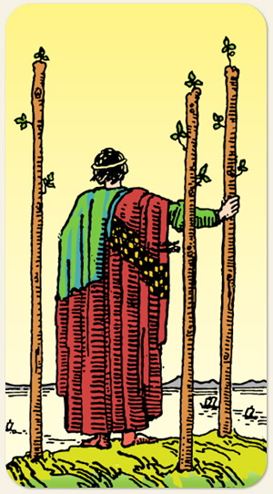

A expansão dos horizontes, a antecipação e o sucesso inicial. O momento em que a visão do Dois de Paus começa a trazer resultados concretos, os navios foram enviados e agora se observa o progresso. A confiança, o comércio e a exploração comercial ou intelectual, o otimismo, a parceria e a certeza de que o caminho escolhido é próspero.
O princípio criativo com a energia do fogo. O desejo de conquistar, alcançar coisas distantes. Não se apressar, correr o risco de perder o barco.
Positivo: Confiar, acreditar, vontade de superar obstáculos, autoestima, grandes decisões, grandes aventuras.
Negativo: Criatividade e energia a serviço do nada. Aventura sem critério ou objetivo. Não estabelecer raízes, infantilidades, atitudes sem pensar, inconsequência, negligência, pessoa perdida, desorientada, caminha sem saber onde vai, pessoas desaparecidas.
Símbolos: Homem, Precipício, Mar, Navio, Montanha.
Cores: Amarelo, Vermelho, Verde, Azul.